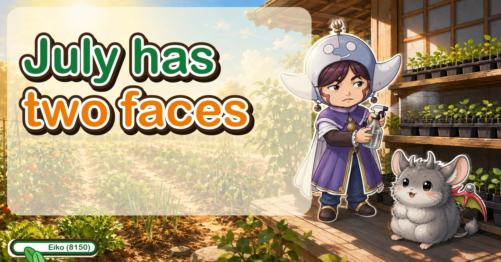
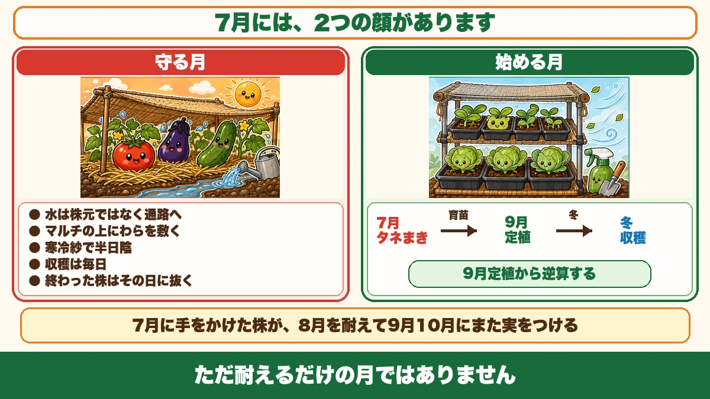
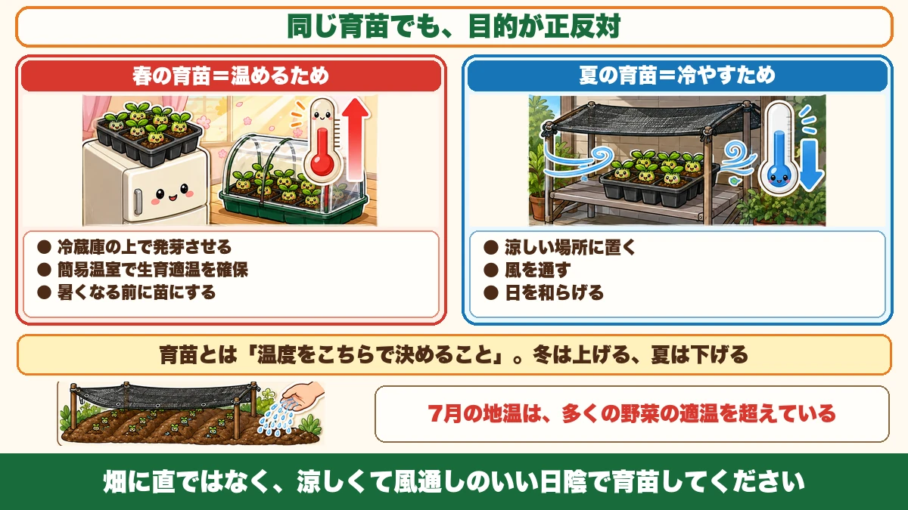
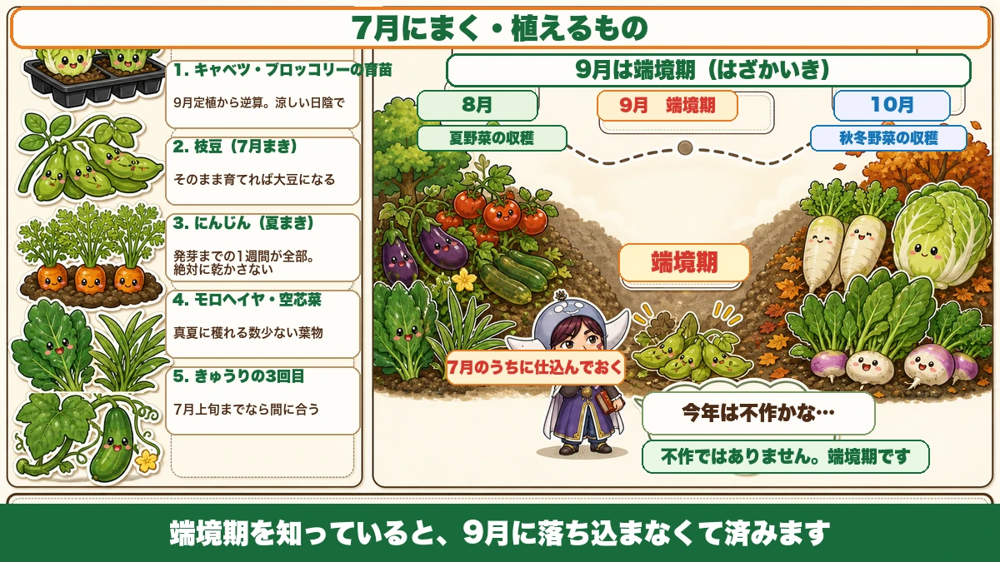

In spring you raise plants to warm them; in summer, to cool them 🌻 July's two jobs

🗨️ "July is just hot. There's nothing to do."
🗨️ "I'll start the winter crops when it cools down."
🗨️ "September always feels a bit thin."
Hello, I'm Eiko. Eight years of growing vegetables organically and without pesticides, and a teaching licence in science.
The monthly instalment — July. The hardest month of the year, and not only a month of endurance.
The point, up front:
July has two faces.
One is protecting the summer crops from the heat. The other is starting the autumn and winter ones ☺️
① The month of protecting

What this diagram says （図解の文字）
- July has two faces
- The month of protecting — water the paths, not the plant ／ straw on top of the mulch ／ shade netting for part shade ／ pick every day ／ pull finished plants the same day
- The month of starting — July: sow and raise plants → September: plant out → winter
Five things, all covered before:
- Water the paths, not the base of the plant — early morning, about ten minutes per spot. The roots are out under the paths; put the water where the mouths are
- Lay straw or cut grass on top of the mulch — black mulch runs 5–10 °C above air temperature. What helped in spring harms now
- Shade netting for part shade — for myoga, ginger, and any summer crop that's struggling
- Pick every day — the more you pick, the more you get, and okra hardens in two or three days
- Pull finished plants the same day — they become mildew reservoirs that infect the neighbours
Those five carry you through the worst of the summer. A plant looked after in July endures August and fruits again in early autumn. Neglected, it's finished before August starts.
② The month of starting
July is when the autumn and winter crops begin.
I assumed for years that winter crops started when it cooled down. They don't.
Work backwards from planting out
Of the crops planted out in early autumn, the ones that take a long time to make a plant start now. Two in particular:
- Cabbage
- Broccoli
Both are slow to reach planting size. Planting out in early autumn means sowing in July.
Same structure as April: bring the sowing and raising forward; don't rush the planting out. Count back from the planting date rather than looking at the calendar, and the year starts to turn over properly.
The same word, the opposite purpose

What this diagram says （図解の文字）
- The same job, opposite purposes
- Spring raising = to warm — germinate them on top of the fridge ／ hold the right temperature in a small frame ／ get them to planting size before the heat
- Summer raising = to cool — keep them somewhere cool ／ let air through ／ soften the sun
In spring, raising plants is a set of tricks for adding heat — germinating them somewhere warm, holding the temperature in a frame.
July is the reverse. Too hot to germinate; too hot for a seedling to grow.
So summer plant-raising is a set of tricks for removing heat:
- keep them somewhere cool
- let air move
- soften the sunlight
The same word, the opposite intention. Which made something click for me: raising plants simply means "you decide the temperature." In winter you raise it; in summer you lower it. That's the whole difference.
Raise them in the shade, not in the bed
Don't sow direct. Raise them somewhere cool and airy and shaded:
- under an eave
- a north-facing balcony
- under a tree
- under a bench with shade netting over it
Modules and pots let you choose the location — which is the whole advantage of raising plants in summer.
If you must sow direct
- Shade netting over the bed
- Water the surrounding ground to cool it
Sow into an unprotected July bed and very little will germinate. The surface is simply too hot.
Remember that germination temperatures refer to soil temperature, not air temperature — and July soil is above the right range for most vegetables.
Filling the September gap
There's an old word for it: the gap season — the interval when the previous crop has finished and the next isn't ready.
- the summer crops are tiring and winding down
- the winter crops are only just planted
So early autumn produces less, and a lot of gardeners conclude they had a bad year. It isn't a bad year. It's the gap. Growers have struggled with it for centuries, which is why it has a name.
The remedy is to prepare for it now: sow in July the things that will crop in early autumn.
Knowing the gap exists stops you feeling defeated by it — and sowing now means it doesn't happen.
What to sow and plant

What this diagram says （図解の文字）
- What to sow and plant in July
- 1 Raising cabbage and broccoli — counted back from an early-autumn planting; in cool shade
- 2 Edamame (July sowing) — left to mature it becomes a soya bean
- 3 Carrots (summer sowing) — the first week until germination is everything. Never let it dry
- Cabbage and broccoli — raised in cool shade, for planting out in early autumn
- Edamame — a July sowing crops in autumn, and left to mature it becomes a soya bean
- Carrots — the summer sowing. The week until germination is the entire job: never let the surface dry. Fleece over the row and water through it
- Molokhia and water spinach — the two leaf crops that produce in real heat
- Mooli and turnips, late in the month, in cooler regions
Priorities for July
If the heat means you can only do some of it, in order:
- Water, early in the morning, on the paths
- Pick everything that's ready
- Pull anything finished
- Start the cabbage and broccoli in the shade
- Everything else
And go out in the early morning. The garden can wait; you shouldn't be in it at midday ☺️
To sum up
- ✅ July protects the summer crops and starts the winter ones
- ✅ Water the paths early; straw over the mulch; shade; pick daily; pull finished plants
- ✅ Winter crops start now, counted back from an early-autumn planting
- ✅ Cabbage and broccoli are the slow ones
- ✅ Spring raising adds heat; summer raising removes it
- ✅ Raising plants simply means deciding the temperature yourself
- ✅ Raise them in cool, airy shade — north-facing is best
- ✅ Germination temperatures are soil temperatures
- ✅ The early-autumn gap is real and has a name — sow now to fill it
- ✅ Sow: cabbage, broccoli, edamame, carrots, molokhia, water spinach
- ✅ Work in the early morning
You don't have to do all of it. Put one tray of cabbage seed somewhere shady this week. That's December's dinner, started 🌻
Thank you for reading!